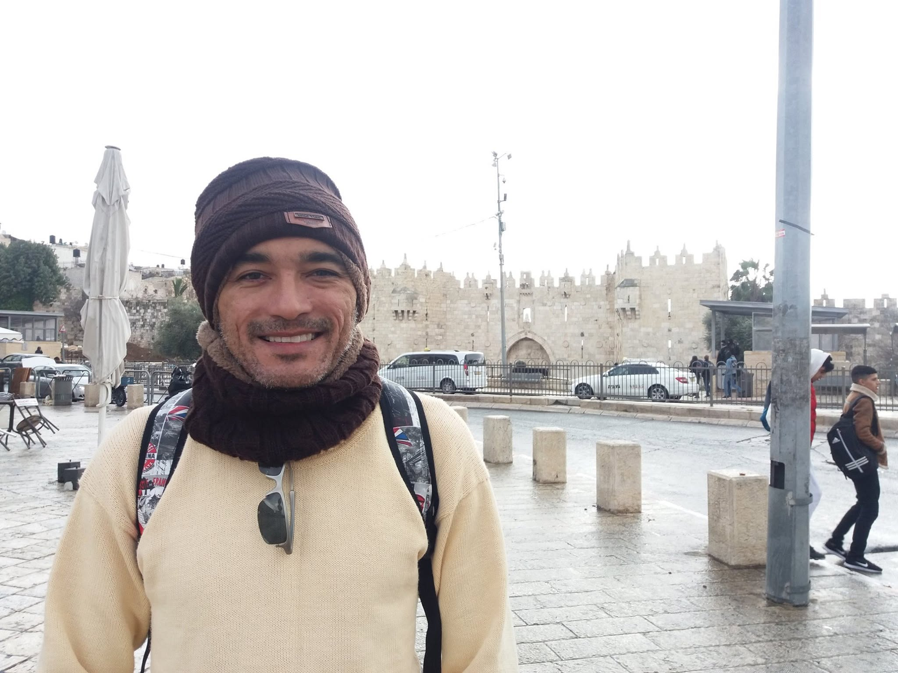

Quem sou eu
Olá pessoal, meu nome é Sandro e moro em Mossoró/RN. Sou graduado em Matemática e Direito. Tenho pós-graduações em Filosofia e fui aluno de dois mestrados (o primeiro, em Matemática/UFC e, o outro, em Filosofia/UFRN). Meu primeiro emprego foi em um Instituto Federal, mas já trabalhei também em várias universidades federais e uma estadual, seja como técnico-administrativo, seja como professor da área de Matemática.
Atualmente, não tenho mais interesse no magistério, nem em fazer cursos pessoais. Continuo apaixonado pelas áreas de Matemática, Física, Computação, Teologia e Direito. Daqui pra frente, meu interesse pessoal é aprender um pouco de informática para poder desenvolver projetos para resolver problemas do setor público e doá-los sem qualquer interesse econômico, por achar que devo parte de minha formação (toda gratuita) à sociedade. Daí minha motivação atual no presente curso que acredito que dará o suporte necessário à implementação de minhas ideias.

Meus Hobbies e Interesses
- Praticar natação
- Assistir filmes e séries
- Refletir sobre a Palavra de Deus e a vida
- Estudar programação web